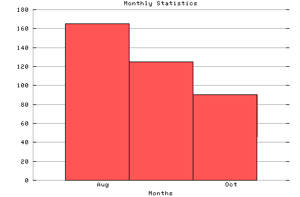

HTTP Server Monthly Statistics
Covers: 08/07/95 to 10/14/95 (69 days).
All dates are in local time.
Aug (08/07/95): 165 : Sep (09/01/95): 125 : Oct (10/03/95): 90 :

Statistics generated at Mon Oct 16 10:19:48 MET 1995, (C) Oslonett AS, 1995.